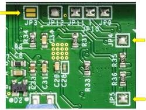
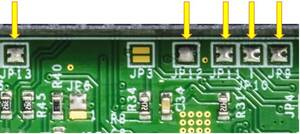

10BASE-T1L Field Device Development Platform with Class 12 and 13 SPoE
General Description
Figure 1 EVAL-CN0575-RPIZ Board
The EVAL-CN0575-RPIZ is a 10BASE-T1L MAC/PHY interface with
Single Pair Power over Ethernet (SPoE) for development of field devices and
applications on a Raspberry Pi platform board. The SPoE powered device (PD) and
isolated flyback regulator provide 5 V power to the platform board and attached
application circuitry. SPoE Class 12 (8.4 W, 24 V nominal) and Class 13 (7.7 W,
55 V nominal) are supported.
Designed for use on the Raspberry Pi platform, the CN0575 hardware features a
40-pin GPIO header, and follows the same mechanical dimensions as a standard HAT.
To allow board stacking and development of field device applications using
Raspberry Pi HATs, an additional GPIO header with extended leads is included
with each evaluation board. However, the CN0575 can also be used on its
own as a basic temperature sensing field device with remote user input/output
via an onboard button and LED.
Evaluation Board Hardware
Primary Side
Figure 2 EVAL-CN0575-RPIZ Primary Side
10BASE-T1L Port (P1 and P2)
Figure 3 10BASE-T1L Port
The EVAL-CN0575-RPIZ evaluation board uses a single
port 10BASE-T1L device and can be connected to a link partner using either one
of the two physical connectors provided:
The P1 terminal block is used for connecting individual wires. Connect the
twisted pair to pins 1 and 2, and the shield (if available) to pin 3. Secure
the connections by tightening the screws on the terminal block.
The P2 port is used for connecting standard IEC 63171-6 cables directly
from a 10BASE-T1L-capable controller unit.
PHY Status Indicators (LED0 and LED1)
LED0 and LED1 are the ADIN1110
status indicators, and can be configured to display various activities via the
device registers.
By default, LED0 is set to turn on when a link is established and blink
when there is activity; while LED1 is disabled. Refer to the LED Control
Register in the ADIN1110 data sheet for a full list of
available functions.
General Purpose LED and Button (ALERT and TEST)
The EVAL-CN0575-RPIZ evaluation board includes a simple
button (TEST) and LED (ALERT) circuit that can be respectively used as
a digital input and a general purpose indicator. This circuit is controlled by
the Raspberry Pi by default (via GPIO16 and GPIO26), but can
alternatively be used with external hardware by changing the appropriate
jumper settings (refer to Connecting the General Purpose LED and Button to
External Hardware).
Figure 4 General Purpose LED and Test Button
The GPIO16 pin is normally pulled high in this circuit, but will read low
when the TEST button is pressed.
SPoE PD Power Class Selection (JP1 and JP2)
By default, the LTC9111 SPoE PD
controller included in the CN0575 circuit is configured for
PD Class 12. If a different PD class is required for the application, the
JP1 and JP2 solder jumpers should be reconfigured to match the desired
class.
Figure 5 SPoE PD Power Class Jumpers
JP1 Shunt Position
JP2 Shunt Position
PD Class
VPD(min)
PPD(max)
Across Pins 2 and 3
Across Pins 2 and 3
10
14 V
1.23 W
Across Pins 2 and 3
No Shunt Inserted
11
3.20 W
Across Pins 2 and 3
Across Pins 1 and 2
12
8.40 W
Across Pins 1 and 2
Across Pins 2 and 3
13
35 V
7.70 W
Across Pins 1 and 2
No Shunt Inserted
14
20.0 W
Across Pins 1 and 2
Across Pins 2 and 3
15
52.0 W
The EVAL-CN0575-RPIZ was designed and evaluated for PD Classes
12 and 13. However, Classes 10 and 11 may still be
usable, depending on the power requirements of the Raspberry Pi model used (and
its peripherals).
Warning
Do not use PD Classes 14 and 15.
The EVAL-CN0575-RPIZ evaluation board is not designed to
handle these higher power specifications.
Secondary Side
Figure 6 EVAL-CN0575-RPIZ Secondary Side
ADIN1110 SW Power-Down Enable and SPI Configuration (JP3 to JP5)
The EVAL-CN0575-RPIZ evaluation board uses
the default hardware configuration for the PHY specified in the
ADIN1110 data sheet. If a different operating mode is
required for the application, the ADIN1110 should first be
placed into software power-down and then configured appropriately via the
device registers.

Figure 7 ADIN1110 SW Power-Down Enable and SPI Configuration Pin
Refer to the table below on setting the JP3 jumper to enable/disable the
software power-down feature:
JP3 Setting
Software Power-Down Configuration
Open
PHY enters software PD mode after a reset operation (Default).
Shorted
PHY does not enter software PD mode after a reset operation.
The ADIN1110 supports both generic SPI and the OPEN
Alliance SPI protocol in its communication. Refer to the table below on
setting JP4 and JP5 to select the SPI protocol:
JP4 Setting
JP5 Setting
SPI Protocol
Open
Open
OPEN Alliance with Protection
Open
Shorted
OPEN Alliance without Protection
Shorted
Open
Generic SPI with 8-bit CRC
Shorted
Shorted
Generic SPI without 8-bit CRC (Default)
ADT75 I²C Bus Address Selection (JP6 to JP8)
The I²C bus address of the onboard ADT75
temperature sensor is dependent on the settings of the JP13, JP14, and
JP15 solder jumpers. Note: The CN0575 device tree overlay in ADI
Kuiper Linux has the temperature sensor I²C address set to the default 0x48.
Figure 8 ADT75 I²C Bus Address Selection
If there is a need to reassign the ADT75 address, refer to the
following table:
JP6
JP7
JP8
I2C Bus Address
B
B
B
0x48 (Default)
B
B
A
0X49
B
A
B
0X4A
B
A
A
0X4B
A
B
B
0X4C
A
B
A
0X4D
A
A
B
0X4E
A
A
A
0X4F
Optional GPIO Pins (JP9 to JP13)

Figure 9 Optional GPIO Pins
By default, some functions of the ADT75 are
connected to various GPIO pins of the Raspberry Pi. If these features will not
be used in the application, the corresponding jumpers can be removed - doing
this will allow these GPIO pins to be used for other external hardware.
Jumper
GPIO
Circuit Function
Description
JP9
GPIO27
ADIN1110 Reset
This an active low ADIN1110 input that resets the part when held low for >10 μs.
JP10
GPIO22
ADIN1110 Link Status Output
This is an active high ADIN1110 output that indicates whether a valid 10BASE-T1L link has been established.
JP11
GPIO23
Time Stamp Capture Signal
Assert this pin to timestamp the latest incoming frame received by the ADIN1110. The captured timestamp will be stored in the TS_EXT_CAPT0 and TS_EXT_CAPT1 registers.
JP12
GPIO24
Time Stamp Timer Signal
This pin is connected to the TS_TIMER pin of the ADIN1110. When the TS_TIMER output is enabled in the device registers, a waveform with high and low times set by the TS_TIMER_HI and TS_TIMER_LO registers is generated.
JP13
GPIO6
Overtemperature Indicator
This pin is asserted when the onboard ADT75 temperature sensor is put into one-shot mode and the temperature measurement exceeds TOS (80°C; default value). By default, the indicator is active low and will only be de-asserted when the temperature drops below THYST (75°C; default value). The temperature sensor can be reprogrammed to change the polarity of this pin, the de-assertion requirement, and the values of TOS and THYST.
General Purpose LED and Button Connections (JP14 and JP15)
Figure 10 General Purpose LED and Button Connections
While normally functioning as a digital input and general
purpose indicator respectively, the TEST button and ALERT LED can
alternatively be used for external applications by changing the settings of
the appropriate jumpers. JP14 is used to set the button connection, while
JP15 is used to set the LED connection.
JP14 Setting
Connection
Open
TEST button is connected to GPIO16 of the Raspberry Pi (Default).
Shorted
TEST button is not connected to the Raspberry Pi.
Table 1 JP15 Setting
JP15 Setting
Connection
Open
ALERT LED is connected to GPIO26 of the Raspberry Pi (Default).
Shorted
ALERT LED is not connected to the Raspberry Pi.
Tip
External hardware can be connected to the TEST
button and ALERT LED using the BTN_IO and LED_IO test points,
respectively.
Power coupling boards compatible with the EVAL-ADIN1100 for
various SPoE classes and droop levels are in development. Alternatively, use a
media converter that supports SPoE PSE functionality.
Refer to the LTC4296-1 datasheet for example coupling networks.
Figure 11 Test Setup with SPoE via PSE or DC Power Supply
Setup without SPoE (USB-Powered Application)
Figure 12 Test Setup without SPoE (USB-Powered Application)
Software Setup
Downloading and Flashing the Micro-SD Card
To use the EVAL-CN0575-RPIZ with the Raspberry Pi, the
micro-SD card should be preloaded with Kuiper Linux,
a distribution based on Raspbian from the Raspberry Pi Foundation that
incorporates Linux drivers for ADI products as well as tools and other
software products.
Complete instructions, including where to download the SD card image, how to
write it to the micro-SD card, and how to configure the system are provided at
Kuiper Linux.
Figure 13 Flashing the Micro-SD using Kuiper Linux
Configuring the Micro-SD Card
The Linux kernel requires a matching device tree overlay to identify the
devices on the CN0575. The overlay table is included with the Kuiper Linux
and simply needs to be enabled.
To do this, follow the Hardware Configuration procedure under Configuring
the SD Card for Raspberry Pi Projects in the Kuiper Linux page.
Enable the CN0575 overlay by adding the following line to config.txt:
dtoverlay=rpi-cn0575
Save the table and reboot the system by entering the following command in the console:
analog@analog:~$
sudoreboot
Determining the IP Address of the CN0575
Follow the below procedure to determine the IP address assigned by the Raspberry
Pi to the EVAL-CN0575-RPIZ:
Complete the hardware setup described in the Basic Operation section.
Remove the Ethernet cable from the EVAL-ADIN1100EBZ
evaluation board and connect it directly to the Raspberry Pi.
Run PuTTY and connect to the Raspberry Pi via SSH. For the Host Name (or IP
address), use analog.local.
Enter the command ifconfig in the console.
The IP address of the EVAL-CN0575-RPIZ board will be listed
as inet under adin1110-0. In the example below, the IP address is
169.254.158.120.
Figure 14 EVAL-CN0575-RPIZ IP Address
Basic Operation
Figure 15 Complete Evaluation Setup
To establish a 10BASE-T1L connection to a Raspberry Pi using the
EVAL-CN0575-RPIZ evaluation board and run a basic temperature
measurement example, follow the below procedure:
Ensure that the jumpers and switches of the EVAL-ADIN1100EBZ are configured to the default settings.
Insert the micro-SD card into its slot on the Raspberry Pi.
Connect the EVAL-CN0575-RPIZ circuit evaluation board to the Raspberry Pi GPIO header.
Using an Ethernet cable, connect P5 on the
EVAL-ADIN1100EBZ evaluation board to an RJ45 port on
the computer.
Using a micro-USB cable, connect P401 on the
EVAL-ADIN1100EBZ evaluation board to a USB port on
the computer.
Operation with SPoE PSE or DC Power Supply: (Skip to step 7 if using a USB
wall adapter instead)
Set the output of the PSE or DC power supply to either 24V (Class 12) or
55V (Class 13), depending on the settings of JP1 and JP2 on the CN0575 board.
Using wires, connect the output of an SPoE power coupler to the P1
terminal block on the EVAL-CN0575-RPIZ circuit evaluation
board. Similarly, connect the data input of the power coupler to the P101
terminal block on the EVAL-ADIN1100EBZ evaluation board.
Connect the output of the SPoE PSE (or DC power supply) to the power input of the SPoE power coupler and enable it.
Operation without SPoE (USB-Powered Application):
Using wires, connect the P1 terminal block on the EVAL-CN0575-RPIZ
circuit evaluation board to the P101 terminal block on the
EVAL-ADIN1100EBZ evaluation board.
Connect the USB wall adapter to the power connector on the Raspberry Pi.
Wait for the LINK LED on the EVAL-CN0575-RPIZ circuit
evaluation board and the LED_0 LED on the EVAL-ADIN1100EBZ
evaluation board to turn on and start blinking at the same time.
This indicates that a 10BASE-T1L link has been established.
On the host PC, run PuTTY and connect to the Raspberry Pi using the
EVAL-CN0575-RPIZ IP address.
In the Raspberry Pi console, navigate to the examples directory of pyadi-iio.
Run the temperature measurement example by entering the following command:
/path/pyadi-iio/examples$
sudopythonlm75_example.py
Figure 16 Sample Readout
More Complete Example with Digital I/O
A more complete example that blinks the onboard LED and reads the push button
is also provided. Note that this script can be run either directly on the
Raspberry Pi, or remotely from a host computer.
From the Raspberry Pi command line, run:
/path/pyadi-iio/examples$
sudopythoncn0575_example.py
Or from PowerShell on a Windows remote host, run:
C:\path\pyadi-iio\examples>
python.\cn0575_example.py
The script will attempt to automatically locate the CN0575 over the network
connection. The CN0575’s IIO context URI can also be passed to the script
explicitly, where www.xxx.yyy.zzz is the board’s IP address:
C:\path\to\pyadi-iio\examples>
python.\cn0575_example.pyip:www.xxx.yyy.zzz
Typical output is shown below:
Figure 17 CN0575 Output Example
Errata
Figure 18 Erroneous Marking on C16
The first batch of EVAL-CN0575-RPIZ circuit
evaluation boards that was produced mistakenly have a 50V capacitor installed
on C16. This voltage rating is insufficient for Class 13 operation where the
SPoE voltage can be as high as 58 V (and potentially even more during surge
events).
These boards can be identified by the last three letters on C16 (HTH, shown
right). If you have one of these and intend to use it in a Class 13
application, either replace C16 with a 100 V capacitor (preferred; this is the
same rating used in later batches of the EVAL-CN0575-RPIZ),
or simply desolder it and leave it empty.
{kind=link}